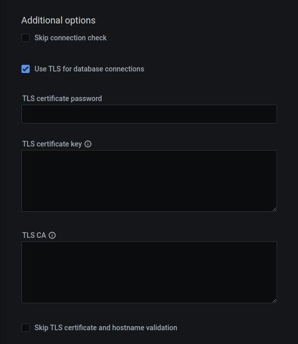

MongoDB¶
How to set up PMM to monitor a MongoDB or Percona Server for MongoDB database instance.
Before you start¶
Check that:
- PMM Server is installed and running with a known IP address or hostname accessible from the client node.
- PMM Client is installed and the node is registered with PMM Server.
- You have superuser (root) access on the client host.
- You have
adminUserAnyDatabaseor superuser role privilege to any database servers that you want to monitor. - Your MongoDB server is version 4.0 or higher.
Create PMM account and set permissions¶
We recommend using a dedicated account to connect PMM Client to the monitored database instance.
Run the example codes below in a mongo session to:
- create custom roles with the privileges required for creating/restoring backups and working with Query Analytics (QAN)
- create/update a database user with these roles above, plus the built-in
clusterMonitorrole
Important
Values for username (user) and password (pwd) are examples. Replace them before using these code snippets.
Create a role with monitoring and QAN privileges¶
This role grants the essential minimum privileges needed for monitoring and QAN.
db.getSiblingDB("admin").createRole({
"role": "explainRole",
"privileges": [
{
"resource": { "db": "", "collection": ""
},
"actions": [ "dbHash", "find", "listIndexes", "listCollections" ]
},
{
"resource": { "db": "", "collection": "system.version" },
"actions": [ "find" ]
}
],
"roles": []
})
Create a role with backup management privileges¶
This role provides the necessary privileges for using PMM’s backup management features. It is required only if you plan to use this feature.
db.getSiblingDB("admin").createRole({
"role": "pbmAnyAction",
"privileges": [
{
"resource": { "anyResource": true },
"actions": [ "anyAction" ]
}
],
"roles": []
});
Permissions for advanced metrics¶
To fetch advanced metrics like usage statistics for collection and indexes, assign the following additional privileges to an existing PMM user:
db.getSiblingDB("admin").updateRole(
"explainRole",
{
"privileges": [
{
"resource": { "db": "", "collection": "" },
"actions": [ "collStats", "dbStats", "indexStats" ]
},
{
"resource": { "db": "", "collection": "system.profile" },
"actions": [ "dbStats", "collStats", "indexStats" ]
},
]
}
)
Create/update user and assign created roles¶
Create or update a user with the minimum required privileges for monitoring by assigning the following roles:
db.getSiblingDB("admin").createUser({
"user": "pmm",
"pwd": "pmm",
"roles": [
{ "db": "admin", "role": "explainRole" },
{ "db": "local", "role": "read" },
{ "db": "admin". "role": "clusterMonitor" }
]
})
If you intent to use PMM’s backup management features, also grant these additional permissions:
db.getSiblingDB("admin").createUser({
"user": "pmm",
"pwd": "pmm",
"roles": [
{ "db" : "admin", "role": "explainRole" },
{ "db" : "local", "role": "read" },
{ "db" : "admin", "role" : "readWrite", "collection": "" },
{ "db" : "admin", "role" : "backup" },
{ "db" : "admin", "role" : "clusterMonitor" },
{ "db" : "admin", "role" : "restore" },
{ "db" : "admin", "role" : "pbmAnyAction" }
]
})
Profiling¶
To use PMM Query Analytics, you must turn on MongoDB’s profiling feature.
You can set profiling:
- permanently, by editing the MongoDB configuration file and restarting the database instance (recommended);
- when starting MongoDB, by passing arguments to
mongodon the command line; - until the next database instance restart, by running a command in a
mongosession.
Important
Profiling is disabled by default as it may negatively impact the performance of the database server under specific circumstances, such as when busy servers are profiling all queries.
Set profiling in the configuration file¶
-
Edit the configuration file (usually
/etc/mongod.conf). -
Create or add this to the
operationProfilingsection. (Read more.)operationProfiling: mode: all slowOpThresholdMs: 200 rateLimit: 100 # (Only available with Percona Server for MongoDB.)Important
This is a YAML file. Indentation matters.
-
Restart the
mongodservice. (Example forsystemd.)systemctl restart mongod
Set profiling on the command Line¶
mongod --dbpath=DATABASEDIR --profile 2 --slowms 200 --rateLimit 100
--dbpath: The path to database files (usually/var/lib/mongo).--profile: The MongoDB profiling level. A value of2tells the server to collect profiling data for all operations. To lower the load on the server, use a value of1to only record slow operations.--slowms: An operation is classified as slow if it runs for longer than this number of milliseconds.-
--rateLimit: (Only available with Percona Server for MongoDB.) The sample rate of profiled queries. A value of100means sample every 100th fast query. (Read more.)Caution
Smaller values improve accuracy but can adversly affect the performance of your server.
Set profiling in a mongo session¶
In a mongo session, the profiler should be enabled per database.
For example, to enable the profiler in the testdb, run this:
> use testdb
> db.setProfilingLevel(2, {slowms: 0})
Important
If you have already added the MongoDB service to PMM, make sure to restart the PMM agent service after adjusting the profiling level.
Add service¶
After configuring your database server, you can add a MongoDB service either through the user interface or via the command line.
Important
To monitor MongoDB sharded clusters, PMM requires access to all cluster components. Make sure to add all the config servers, shards, and at least 1-2 mongos routers. Otherwise, PMM will not be able to correctly collect metrics and populate dashboards. Keep in mind that adding all mongos routers may cause excessive overhead.
On the command line¶
Use pmm-admin to add the database server as a service using one of these example commands.
When successful, PMM Client will print MongoDB Service added with the service’s ID and name. Use the --environment and -custom-labels options to set tags for the service to help identify them.
Tips
- When adding nodes to a sharded cluster, ensure to add each node separately using the
--cluster myclusteroption. This allows the MongoDB Cluster Summary dashboard to populate correctly. - You can also use the
--replication-setoption to specify a replication set, altough they are automatically detected. For instance, you can use--replication-set configfor your config servers;--replication-set rs1for your servers in the first replica set,--replication-set rs2for your servers in the second replica set, and so on. - When running mongos routers in containers, specify the
diagnosticDataCollectionDirectoryPathto ensure that pmm-agent can properly capture mongos metrics. For example:mongos --setParameter diagnosticDataCollectionDirectoryPath=/var/log/mongo/mongos.diagnostic.data/
Examples¶
Add basic data collection:
pmm-admin add mongodb \
--username=pmm_mongodb --password=password \
--query-source=profiler --cluster=mycluster
Add complete data collection with a custom service name:
pmm-admin add mongodb \
--username=pmm_mongodb --password=password \
--service-name=mymongosvc --host=127.0.0.1 --port=27017 \
--enable-all-collectors
Connecting via SSL/TLS¶
pmm-admin add mongodb --tls \
--tls-certificate-key-file=PATHTOCER \
--tls-certificate-key-file-password=IFPASSWORDTOCERTISSET \
--tls-ca-file=PATHTOCACERT \
--authentication-mechanism=AUTHENTICATION-MECHANISM \
--authentication-database=AUTHENTICATION-DATABASE \
--cluster=mycluster \
--enable-all-collectors
where:
PATHTOCERT: Path to TLS certificate file.IFPASSWORDTOCERTISSET: Password for TLS certificate file.PATHTOCACERT: Path to certificate authority file.AUTHENTICATION-MECHANISM: Authentication mechanism. Default is empty. UseMONGODB-X509for SSL certificates.AUTHENTICATION-DATABASE: Authentication database. Default is empty. Use$externalfor SSL certificates.
With the PMM interface¶
Use this option when you don’t have direct access to the underlying host to install pmm-agent locally.
-
Select Configuration Inventory.
-
Select MongoDB – Add a remote instance.
-
Enter or select values for the fields.
-
Click Add service.
Check the service¶
On the command line¶
Look for your service in the output of this command.
pmm-admin inventory list services --service-type=mongodb
With the PMM interface¶
- Select Configuration Inventory.
- In the Services tab, verify the Service name, Addresses, and any other relevant values used when adding the service.
- In the Options column, expand the Details section and check that the Agents are using the desired data source.
- If your MongoDB instance is configured to use TLS, click on the Use TLS for database connection check box and fill in TLS certificates and keys.
If you use TLS, the authentication mechanism is automatically set to
MONGODB-X509.

Check data¶
- Open the MongoDB Instances Overview dashboard.
- Set the Service Name to the newly-added service.
Query Analytics¶
- Open PMM Query Analytics.
- In the Filters panel:
- Under Service Name, select your service.
- Under Service Type select
mongodb.
Remove service¶
On the command line¶
pmm-admin remove mongodb SERVICE_NAME
SERVICE_NAME: The name the service was added as. (Find it withpmm-admin list.)
With the PMM interface¶
Use this option only top remove agents installed through the PMM interface.
- Select Configuration Inventory.
- In the first column, click the tick box for the service you want to remove.
- Click Delete.
- On the Confirm action dialog window:
- (Optional) Select Force mode to also delete associated agents.
- Click Proceed.